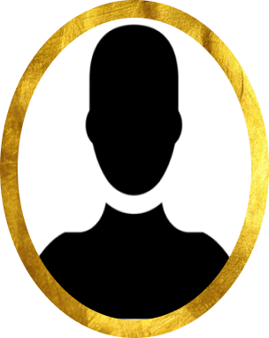
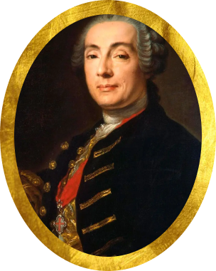

На главную
На главную
Первая половина XVIII в.
В первой половине XVIII века в России происходило развитие профессиональной музыки. Начиналось освоение таких европейских жанров, как опера, кантата, соната, сюита. В дворянских семьях обязательным становилось музыкальное домашнее образование.
Немецкая труппа Кунста даёт музыкальные представления на Красной площади
В 1702 году в Москву прибыла заурядная по уровню профессионализма труппа антрепренера Иоганна Кунста, которая на Красной Площади в специально построенной по такому случаю «комедийной хоромине»
несколько лет давала драматические и музыкальные представления на немецком языке. Затем в развитии подобных выступлений последовал
длительный перерыв (1706–1731 гг).
Борис Годунов" Маттезона - первая в истории опера на русский сюжет
Царь Федор Иоаннович смертельно болен. Сторонники Бориса Годунова считают, что правление на Руси должен унаследовать он. Но некий зарубежный принц Йозеннах, обольщающий сразу двух девушек из влиятельных боярских семей, княжну Ольгу и дочь Годунова Аксинью, надеется с помощью одной из них захватить русский трон. Однако замысел злокозненного принца разоблачен. На царство венчают Годунова, а три близкие ко двору пары устраивают свое будущее.
Главные деятели искусство


Доминико Андреа Трезини
Варфоломеей Варфоломееевич Растреелли